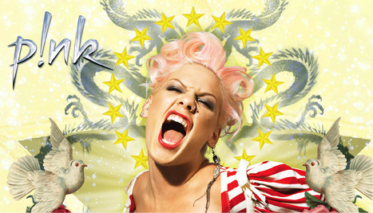
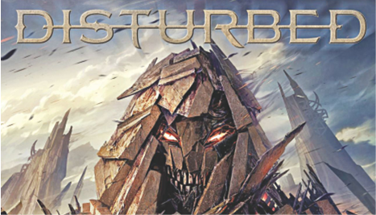
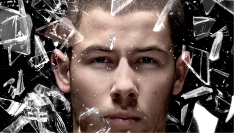

Welkom bij My Tunes van Falke Knockaert. Hier kan u mijn favoriete albums vinden.
Pink - I'm not dead

I'm not dead is het vierde album van Pop/rock - artiest P!nk. Het album wordt gezien als een comeback-album, daarom ook de titel. "Dear Mr. President" en "Leave Me Alone" zijn 1 van de tracks in dit album
1.Stupid Girls -
2. Who knew -
3. Long way to Happy -
4. Nobody knows -
5. Dear mr Presidenty -
6. I'm not dead -
7. 'Cuz I can -
8. Leave Me alone -
9. U + Ur hand -
10. Runaway -
11. The one that got away -
12. I got money now -
13. Conversations with my 13 year old self -
14. Fingers -
15. Centrefold -
16. I've seen the rain -
Disturbed - Immortalized

"Immortalized" is het 6e album van de alternatieve metal band Disturbed. Het album wed uitgebracht op 21 augustus 2015. De 3e single van het album is een cover uit 1964 "Sound of silence"
1. The eye of the storm -
2. Immortalized -
3. The vengeful one -
4. Open your eyes -
5. The light -
6. What are you waiting for -
7. You're mine -
8. Who -
9. Save our last goodbye -
10. Fire it up -
11. The sound of silence -
12. Never wrong -
13. Who taught you how te hate -
Nick Jonas - Last year was complicated

"Last year Was Copmlicated" is het 3e solo album gemaakt door Nick Jonas. Het werd uitgebracht op 10 juni 2016. in het album werd samengewerkt met Tove Lo, Ty Dolla Sign, Big Sean en Daniella Mason.